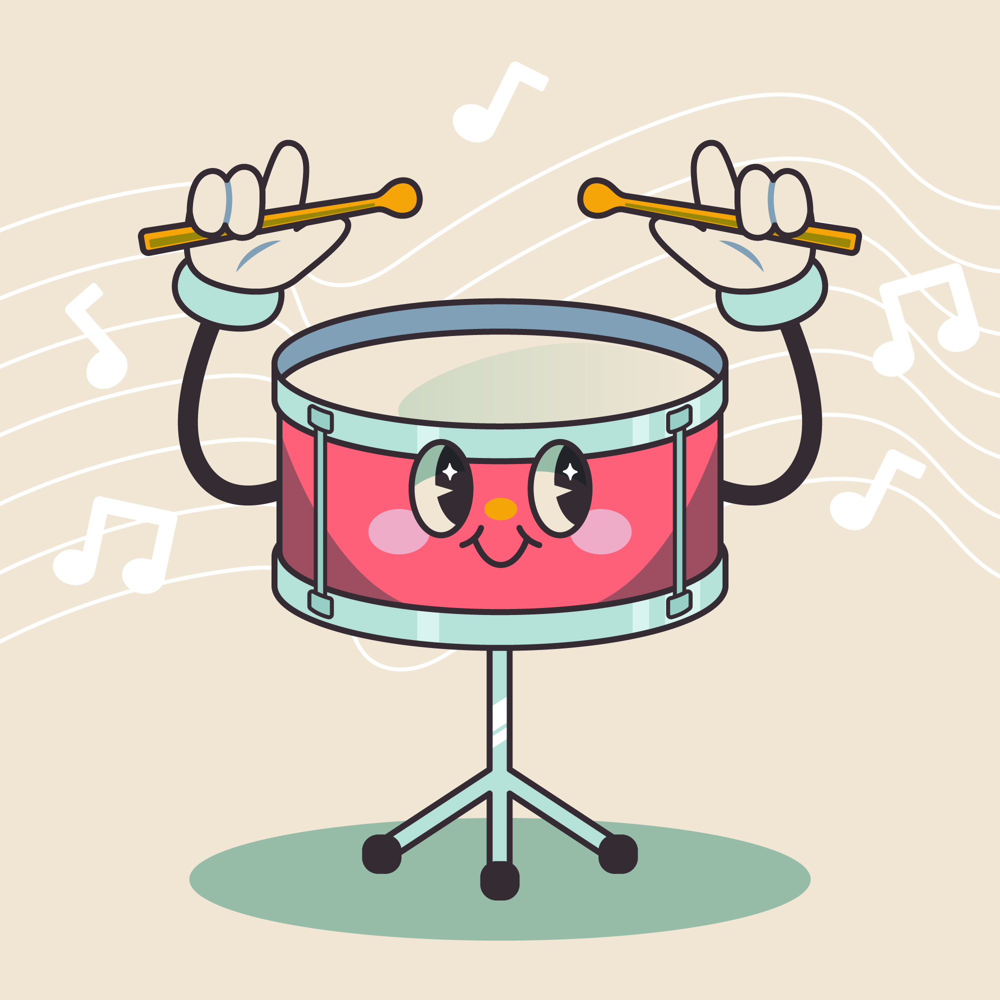

(Click on drum for a drum roll!)
Congratulations! Based on your responses, your spirit animal is Banjo, a wonderfully affectionate and gentle cat with a playful side. Banjo is known for being the ultimate cuddle buddy, always ready to offer a purring comfort and a soft paw to rest on.
Here’s a bit more about Banjo:
How This Reflects You:
Just like Banjo, you have a nurturing and gentle personality. You value deep connections and find joy in the small, comforting aspects of life. Your friends and loved ones likely appreciate your caring nature and the sense of peace you bring into their lives.
Congratulations! Based on your responses, your spirit animal is Fiona, a fabulous and spirited cat with a sassy attitude and a flair for drama. Fiona is known for her confidence and independence, with a knack for stealing the spotlight wherever she goes.
Here’s a bit more about Fiona:
How This Reflects You:
Just like Fiona, you have a vibrant and assertive personality. You embrace your individuality with confidence and enjoy being in the spotlight. Your friends and acquaintances likely admire your boldness and the way you bring a touch of excitement to any situation.
Congratulations! Based on your responses, your spirit animal is Yoshi, a delightfully energetic and fun-loving cat with a zest for adventure. Yoshi is known for his boundless enthusiasm and playful nature, always ready to turn any moment into a joyful escapade.
Here’s a bit more about Yoshi:
How This Reflects You:
Just like Yoshi, you have a vibrant and enthusiastic personality. You approach life with a sense of wonder and are always on the lookout for fun and adventure. Your friends and loved ones likely appreciate your playful nature and the way you bring energy and joy to any situation.